从一个比特模式，到一个 6850 亿参数的模型
量化（Quantization），
推理的
主力军。
量化（quantization）是触及 LLM 服务每一个指标的技术——首 token 时间（TTFT）、逐 token 延迟（ITL）与吞吐量（throughput）。它同时以两种方式起作用：在计算受限的预填充（prefill）中减少 FLOP，在内存受限的解码（decode）中减少字节。本详解从单个浮点数开始，一路构建整个技术，直到 DeepSeek 的 FP8 逐块（tile-wise）方案。
每一步都压缩屋顶线（roofline）上一个不同的瓶颈。
大多数量化讲解都止步于公式。真正有趣的部分是加速究竟从何而来——它对预填充矩阵乘法和解码矩阵乘法来说是两种不同的机制。我们将在本详解中用具体数字推导两者。
向下滚动，看着那个点向上攀升。
↓
三个指标，两种机制。
一个服务工程师的职责就是关心三个数字。首 token 时间（TTFT）是用户按下发送到第一个 token 返回之间的墙钟时间——由预填充（prefill）矩阵乘法主导。逐 token 延迟（ITL）是生成过程中后续 token 之间的墙钟时间——由解码（decode）步骤主导。吞吐量（throughput）是你能够跨多个并行请求提供的总 token 速率。
量化（quantization）改善所有这三个指标。但是——这正是大多数人忽略的地方——它改善预填充和解码的原因各不相同。预填充是计算受限（compute-bound）的；解码是内存受限（memory-bound）的。量化同时触及两者。本章前半部分就是关于正视这一区别。
i · 为何预填充是计算受限的——以及更低精度如何缩短它
预填充的矩阵乘法大致是 (tokens × d_model) @ (d_model × d_model)——一个胖矩阵乘以另一个胖矩阵。计算量按 tokens × d_model² 增长，对于长提示来说非常庞大。每从内存加载一个字节的数据，我们就要执行许多次 FLOP。张量核心（tensor core）始终保持饱和。GPU 在做真正的工作，而不是在等待。
成本在于乘法本身。一个 FP32 乘法器需要的晶体管和能量约是 FP16 乘法器的 4 倍，约是 INT8 乘法器的 16 倍。相同的硅片面积可以容纳更多低精度乘法器，因此随着精度下降，张量核心的峰值吞吐量会急剧上升：
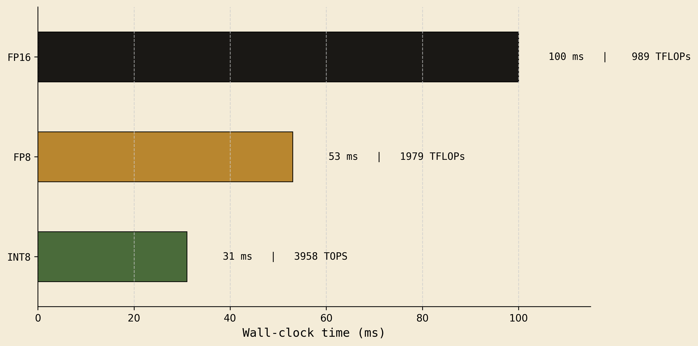
FP16 → FP8 将预填充时间减半。INT8 又将其削减约 40%。对于长提示（想象 8k+ token），这就是一个响应敏捷的助手与一个反应迟缓的助手之间的差别。更低精度缩短 TTFT，是因为矩阵乘法本身运行得更快——同样的运算次数，更便宜的运算。
ii · 为何解码是内存受限的——以及更少字节如何缩短它
解码（decode）是完全不同的另一回事。我们一次生成一个 token。矩阵乘法变为 (1 × d_model) @ (d_model × d_model)——一个瘦向量乘以一个胖权重矩阵。现在算术量与数据相比微不足道：我们把整个权重矩阵从 HBM 拖过 SM，只为用它乘以一行。每执行一次 FLOP，我们就要搬运大量字节。张量核心大部分时间处于空闲状态；它们在等待内存。
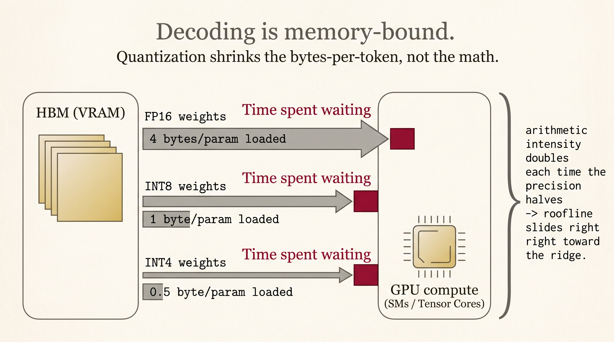
FP32: AI = 0.5 | FP16: AI = 1.0 | INT8: AI = 2.0 | INT4: AI = 4.0
每次将精度减半，都会使算术强度翻倍。同一个操作在屋顶线图上向右滑动，从“数据饥渴”走向“计算饱和”。对于自回归解码——任何服务系统的延迟瓶颈——INT4 可以比 FP16 快 3-4 倍。不是因为 INT4 运算更快，而是因为我们从内存加载的数据少了 4 倍。
第三个指标——吞吐量——则免费获得。一个 70B 参数模型在 FP16 下需要 140GB，也就是两张 H100。在 INT4 下，它只有 35GB——能装进一张 H100，还留有空间容纳大得多的批量。每请求更少 VRAM → 更多并行请求 → 更高吞吐量。
| 指标 | 瓶颈类型 | 量化如何帮助 |
|---|---|---|
| TTFT（预填充） | 计算受限 | 更便宜的 FLOP · 张量核心在更低精度下快 2-4 倍 |
| ITL（解码） | 内存带宽受限 | 更少加载字节 · 每次减半算术强度翻倍 |
| 吞吐量 | VRAM 受限 | 更小的权重 + KV 占用 · 可容纳更大批量 |
单个浮点数实际是如何存储的。
大多数工程师记住了「符号、指数、尾数」就止步于此。但对量化真正重要的直觉是不同的。一个浮点数就是两样东西：数轴上的一个窗口（window），以及窗口内的一个偏移（offset）。指数选择窗口，尾数选择偏移，符号选择正负两侧。
i · 32 位布局
ii · 数轴生活在二的幂窗口中
数轴被划分成诸如 [0.5, 1]、[1, 2]、[2, 4]、[4, 8] 等窗口。随着你远离零，每个窗口的宽度翻倍。每个窗口包含相同数量的可表示尾数位置——对于 FP32 是 2²³ ≈ 8.4M。
iii · 实例演练——在 FP32 中编码 6.1
第 1 步 — 符号
第 2 步 — 哪个窗口？
窗口 = [2², 2³]
原始指数 = 2
第 3 步 — 加上 +127 偏置
二进制：1000 0001
第 4 步 — [4, 8] 内的偏移
= 2.1 / 4 = 0.525
→ 52.5% 的位置
第 5 步 — 尾数桶
桶 = 0.525 × 8,388,608
= 4,404,019
第 6 步 — 最终的 32 位模式
M=0001 0000 1100 1100 1100 110
≈ 6.10000038
iv · 我们到底为什么要加 127？
指数字段是 8 个无符号位——它只能容纳 0 到 255 的值。但我们需要用负指数表示极小数字（如 2⁻¹²⁶），用正指数表示极大数字（如 2⁺¹²⁷）。诀窍在于：存储 actual_exponent + 127，这样无符号字段就能覆盖整个有符号范围。这个平移就是指数偏置（exponent bias）。
2^(E−1) − 1。v · 需要牢记的两个直觉
指数 → 范围
使用 E 个指数位，你会得到 2^E − 2 个可用窗口（两个被保留给零/次正规数和无穷/NaN）。窗口越多，数轴在耗尽之前延伸得越远。
FP32：8 位 → 254 个窗口 → ±3.4×10³⁸
FP16：5 位 → 30 个窗口 → ±65,504
BF16：8 位 → 254 个窗口 → ±3.4×10³⁸
FP8 E4M3：4 位 → 14 个窗口 → ±448
尾数 → 精度
每个窗口——无论是微小的 [0.5, 1] 还是巨大的 [2¹²⁶, 2¹²⁷]——都被划分成相同的 2^M 个桶。因此绝对间距会随着数字增大而变差。
窗口 [0.5, 1] · 23 位尾数
→ 间距 ≈ 6 × 10⁻⁸
窗口 [8, 16] · 23 位尾数
→ 间距 ≈ 9.5 × 10⁻⁷ （16× 更粗糙）
格式动物园。
现代推理中有七种数值格式很重要。取舍始终相同：把比特花在更多窗口（更大范围）上，还是花在每窗口更多桶（更高精度）上。下面是你在阅读任何量化论文时都应该打开参考的表格。
| 格式 | 位数 | 符号 | 指数 | 尾数 | 窗口数 | 桶/窗口 | 范围 | 用武之地 |
|---|---|---|---|---|---|---|---|---|
| FP32 | 32 | 1 | 8 | 23 | 254 | 8,388,608 | ±3.4e38 | 训练主副本 |
| FP16 | 16 | 1 | 5 | 10 | 30 | 1,024 | ±65,504 | Hopper 之前的推理默认格式 |
| BF16 | 16 | 1 | 8 | 7 | 254 | 128 | ±3.4e38 | Hopper、TPU、MI300 训练 |
| FP8 E4M3 | 8 | 1 | 4 | 3 | 14 | 8 | ±448 | DeepSeek V3, Llama 3.1 FP8 |
| FP8 E5M2 | 8 | 1 | 5 | 2 | 30 | 4 | ±57,344 | FP8 训练（梯度） |
| INT8 | 8 | 1 | — | — | — | 256 total | −128..127 | SmoothQuant, LLM.int8() |
| INT4 | 4 | 1 | — | — | — | 16 total | −8..7 | GPTQ, AWQ, GGUF |
i · BF16 是减去精度的 FP32，而非减去范围
BF16 是更优雅的设计之一。它保留 FP32 的八个指数位（因而保留 FP32 巨大的 ±3.4×10³⁸ 范围），并牺牲尾数位——只有七个，而 FP32 是二十三个。对于训练来说，你需要跨多个数量级表示梯度，但不需要每个值都极度精确，这正是正确的取舍。Hopper、TPU 和 MI300 都用 BF16 训练。
ii · 为何相同位数下浮点数胜过整数
整数在整个数轴上均匀分布其可表示值。浮点数将它们聚集在零附近。对于一个高斯分布的权重矩阵——这正是 transformer 最终得到的结果——这是一个巨大的优势。
对称量化（symmetric quantization），在一条共享轴上。
这是量化（quantization）在最简单形式下回答的问题。给定一列 FP32 数字，我们如何将它们压缩成 INT8——只有 256 个不同的整数码——同时尽可能少地丢失信息？最简单的答案是对称量化（symmetric quantization）：选择一个缩放因子（scale），把数据的绝对最大值映射到整数最大值，并让零保持为零。
量化： q = clamp(round(x / scale), −127, 127)
反量化： x̂ = q · scale
关键的视觉点在于：FP32 值和 INT8 码生活在同一条数轴上。不存在“上面是 FP 轴、下面是 INT 轴”——它们共用一把尺子，上面有两种刻度。
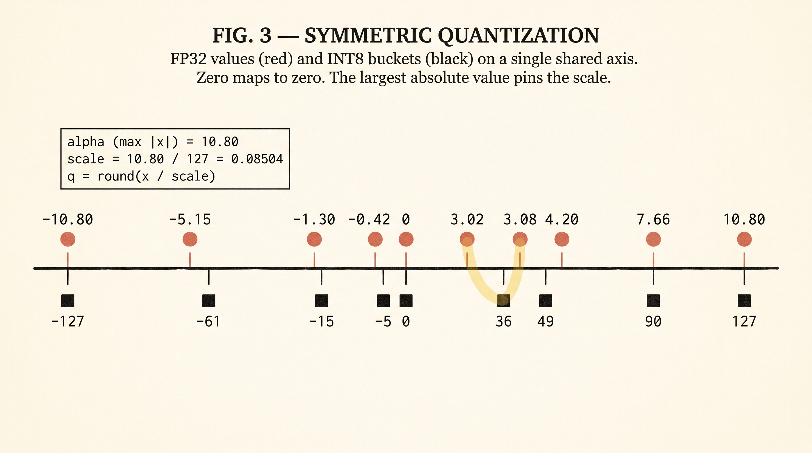
i · 走一遍八值示例
取这个 FP32 向量：
绝对最大值是 α = 10.80（以金色高亮）。这设定了 scale = 10.80 / 127 = 0.08504。每个值都除以缩放因子、取整，并夹到 [−127, +127] 范围内：
| x (FP32) | x / scale | q (INT8) | x̂ = q · scale | 误差 |x − x̂| |
|---|---|---|---|---|
| 3.08 | 36.2 | 36 | 3.061 | 0.019 |
| −0.42 | −4.9 | −5 | −0.425 | 0.005 |
| 10.80 | 127.0 | 127 | 10.800 | 0.000 ← 锚定缩放因子 |
| −1.30 | −15.3 | −15 | −1.276 | 0.024 |
| 7.66 | 90.1 | 90 | 7.654 | 0.006 |
| 3.02 | 35.5 | 36 | 3.061 | 0.041 ← 与 3.08 碰撞 |
| −5.15 | −60.6 | −61 | −5.187 | 0.037 |
| 4.20 | 49.4 | 49 | 4.167 | 0.033 |
scale / 2 ≈ 0.043 为界——你永远不会偏差超过半步。（2）误差的符号互不相关，因此在很长的矩阵乘法（每个输出元素约数千次乘加）中，误差大多会相互抵消。这就是量化之所以有效的统计学原因。非对称量化（asymmetric quantization），带偏移的零。
对称量化把 [−α, +α] 映射到 [−127, +127]。但如果数据不以零为中心对称呢？想象一个总是 ≥ 0 的 ReLU 后激活，或者一个最小值为 −5、最大值为 +11 的向量。那么整数范围的一半就被浪费在永远不会出现的值上。非对称量化（asymmetric quantization）添加一个零点（zero-point）来平移整个映射。
零点 z = round(−128 − β / scale)
量化： q = clamp(round(x / scale + z), −128, 127)
反量化： x̂ = (q − z) · scale
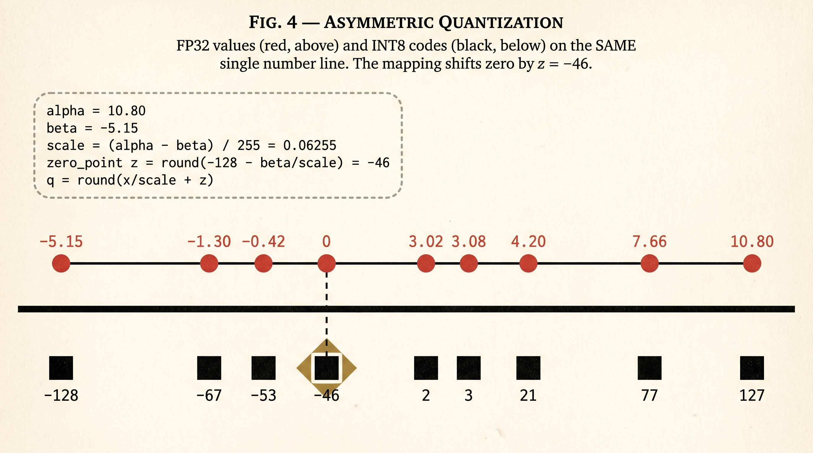
i · 同一个输入向量，非对称地映射
scale = 15.95 / 255 = 0.06255, z = −46
| x | x / scale | + z | q (INT8) | x̂ | 误差 |
|---|---|---|---|---|---|
| 3.08 | 49.2 | 3.2 | 3 | 3.065 | 0.015 |
| −0.42 | −6.7 | −52.7 | −53 | −0.438 | 0.018 |
| 10.80 | 172.7 | 126.7 | 127 | 10.821 | 0.021 |
| −1.30 | −20.8 | −66.8 | −67 | −1.314 | 0.014 |
| 7.66 | 122.5 | 76.5 | 77 | 7.694 | 0.034 |
| 3.02 | 48.3 | 2.3 | 2 | 3.002 | 0.018 |
| −5.15 | −82.3 | −128.3 | −128 | −5.129 | 0.021 |
| 4.20 | 67.1 | 21.1 | 21 | 4.191 | 0.009 |
对称 · 何时使用它
- 数据大致以零为中心（权重通常如此）
- 你想要更简单的矩阵乘法 kernel——无需零点记账
- 每个量化组一个标量，更快
- INT8 权重量化的默认选择
本例中的平均误差：0.021
非对称 · 何时使用它
- 数据有偏移（ReLU 后、softmax 后、KV 缓存）
- 你承受得起额外的零点算术
- 对非对称范围更紧凑的打包
- 激活量化的常见选择
本例中的平均误差：0.019
这就是为什么生产方法——GPTQ、AWQ、GGUF 以及 DeepSeek 的逐块方案——从不对每个张量只用一个缩放因子。它们使用共享单个缩放因子的小组（group）值。我们将在 § VII 和 § VIII 中确切看到它是如何运作的。
两种 PTQ 方案——以及累加器的问题。
现在我们知道如何把浮点数映射为整数。更难的问题是：在前向传播中的哪里量化，又在哪里反量化？有两种模式占主导，从远处看它们几乎一模一样。但它们并不相同，它们通过不同的机制加速推理。
i · 在继续之前——一个层究竟做了什么
为了理解方案 1 和方案 2，我们需要对单个 transformer 线性层在计算什么有一个共同的心智图景。放大 LLM 中的一个层。它接收一个长度为 d_model 的输入向量 x，将其乘以形状为 d_model × d_out 的权重矩阵 W。输出 y 是一个长度为 d_out 的向量，其中每个输出元素都是一个点积（dot product）——一组乘法的和。
把这张图记在心里。下面的每个方案只是为两个彩色列（输入和权重）以及底部的绿色累加器选择一个精度。其它一切都是管道（plumbing）。
ii · 方案 1 — 仅权重（GPTQ、AWQ、NF4）
权重在离线时量化一次，并以量化形式存储在 HBM 中。就在每层矩阵乘法之前，权重被反量化回 FP16。矩阵乘法本身在 FP16 下运行。激活（activation）从不被量化——它们全程保持 FP16。
到目前为止，我们只指定了量化发生在前向传播中的哪个位置。我们还没有说明量化后的权重值究竟是如何选择的。两个最有影响力的仅权重量化算法——GPTQ 和 AWQ——用两种截然不同的技巧回答这个问题。两者都属于上面的方案 1。
iii · GPTQ — 量化，然后重新分配误差
GPTQ 代表 Generative Pre-trained Transformer Quantization（Frantar 等人，2022）。全名来自论文标题《Accurate Post-Training Quantization for Generative Pre-Trained Transformers》，该算法是对一种更早的方法 OBS / Optimal Brain Surgeon 的改进。
让我们建立一个具体例子。transformer 中的一个线性层计算：
其中 w = [w₁, w₂, w₃] 是我们要量化的权重，x = [x₁, x₂, x₃] 是流入的激活。我们真正关心的是输出 y——只要 y 结果正确，我们并不在乎每个单独的权重是否被精确存储。
为了让图景简单，取一个具体的权重向量 w = [1.34, 0.34, 0.34]，并假设激活是 x = [1, 1, 1]（因此输出就是 y = 1.34 + 0.34 + 0.34 = 2.02）。当激活不全是 1 时，数学运算是一样的——它们只是重新缩放每个权重的量化误差对输出的贡献程度。
关键难点在于：我们只能把每个权重存储为 0.20 的倍数（我们受限于这个 INT4 网格）。朴素的做法是，把每个权重四舍五入到最近的 0.20 倍数——但误差全部累加，输出会损失 0.18。GPTQ 做得更聪明。
它一次量化一个权重，同时维护一个记录输出偏差的“账本”（ledger）。每存储一个权重后，它查看账本并调整下一个权重在取整前的值，把账本推回零。如果我们超了，就在取整前从下一个权重中减去；如果欠了，就加上。取整本身是普通的“四舍五入到最近网格点”——没有魔法，就是最近网格。
先以小组项目作类比，然后给出下面的实际数字。
现在用一根干净的运行余额条来表示同一张图：
现在用实际数字表示同一张图，画成运行余额条：
这就是 GPTQ 的一幅图：永远不要忽视累积的输出误差，并预先调整下一个权重来抵消它。GPTQ 比朴素量化更昂贵（你按顺序处理权重），但它离线运行一次，就能产生一个质量高得多的 INT4 模型，然后你在方案 1 下部署它。
更深入一层——Hessian 从何而来
上面的版本把全部运行误差都推进紧随其后的那个权重。在真正的 GPTQ 中，情况并非完全如此——运行误差被分摊到所有尚未量化的权重上，每个权重吸收多少取决于它的敏感度（sensitivity）。
图景如下：想象同样三个队友，但现在每个人都有不同的“弹性预算”——有些人对项目至关重要（其存储值的微小变化确实会大幅改变输出），另一些人则很灵活（微小变化几乎无所谓）。当 P1 超调 0.06 时，那 0.06 的修正会按弹性比例在 P2 和 P3 之间分配：灵活的队友吸收更多修正，僵硬的队友吸收更少。GPTQ 论文中的逆 Hessian 正是量化这种逐权重弹性预算的公式。
在本节其余部分，我们将继续使用更简单的“把全部误差推给下一个权重”的图景——运行余额的直觉才是关键。Hessian 那一部分只是决定如何把修正更精细地分配到多个下游权重的改进。
iv · AWQ — 保护激活所关心的通道
AWQ 代表 Activation-aware Weight Quantization（Lin 等人，2023）。它针对与 GPTQ 相同的问题，但从完全不同的角度解决。AWQ 跳过 Hessian 和逐权重的推理。相反，它问：既然某些激活通道远大于其它通道，哪些权重列最重要？
观察结果是：对应激活通道较大的权重列对输出贡献很大。该权重列中的小量化误差会被大激活相乘，并在输出处显著显现。因此那些权重列值得比其它列更高的精度。AWQ 在量化前把重要列向上缩放，并在推理时把对应的激活向下缩放——数学上相互抵消，但重要权重现在占据了 INT4 网格更精细的一段。
|x|。少数几个通道（这里是 c₃、c₆）远大于其余通道——这些正是其权重列最重要的通道。第 2 步：量化前，把这些列按某个因子 s（例如 2×）放大，使它们更细粒度的值现在覆盖更多 INT4 网格。第 3 步：推理时，把对应的激活项除以 s。矩阵乘法的数学抵消了，但重要权重列现在以更高的有效精度量化。没有 Hessian，没有顺序处理——只是逐通道缩放和一轮普通的 INT4 量化。为何“放大”能带来更精细的分辨率——放大镜图景
先暂时忘掉“分辨率”这个数学词。下面是 AWQ 所做之事的日常版本。
想象一把粗糙的尺子，每 0.20 英寸一个刻度。你想测量一个仅 0.06 英寸宽的微小物体。尺子看不到它——最近的刻度是“0”，所以你记下“0 英寸”。这个物体消失了。
诀窍：在物体上放一个让它看起来大 4 倍的放大镜。现在它看起来是 0.24 英寸——尺子能看到它，并记下“0.20 英寸”。之后，当你回头读取测量值时，你记得放大镜是 4 倍，所以你除以 4：0.20 / 4 = 0.05。非常接近原始的 0.06。微小的物体不再不可见了。
先以图作类比，然后给出下面的实际数字。
现在用实际的 INT4 数字表达同一个想法：
一句话的关键想法：尺子保持不变，但通过测量前把权重放大 4×、读回时把结果缩小 4×，每个旧网格点现在都对应原始权重空间中四分之一大小的值。矩阵乘法的输出不变，因为我们同时把激活除以 4——但微小的关键权重不再不可见。
一句话说 GPTQ
花离线算力让每个权重的量化误差变得已知，并在尚未量化的权重中补偿它。离线成本更高，质量非常高。
一句话说 AWQ
留意激活关心哪些通道。通过缩放那些权重列给它们更多 INT4 分辨率，并在推理时在激活侧抵消缩放。便宜、简单、极具竞争力。
两种方法都产生部署在方案 1下的 INT4（或 INT3）权重检查点——权重以量化形式存放在 HBM 中，并在每次矩阵乘法前即时反量化。实践中 GPTQ 和 AWQ 的选择通常归结为：你是否有离线预算来运行基于 Hessian 的优化，还是想要一次性的校准。
GPTQ 和 AWQ 如何都建立在逐组（per-group）量化之上
这里很容易混淆两个不同的选择。之前我们谈到逐张量（per-tensor）、逐通道（per-channel）和逐组（per-group）量化——那是一个轴（粒度，即你存储多少个缩放因子）。GPTQ 和 AWQ 是另一个轴（算法，即缩放因子和量化值是如何计算的）。这两个轴是独立的。
关键是，GPTQ 和 AWQ 都选择相同的基础粒度——沿输入维度 group_size = 128 的逐组量化。它们在粒度上完全一致。它们的分歧在于那个共享基础之上再做什么。
分组在权重矩阵上看起来是什么样？
取一个真实的 Llama-3 线性层：形状为 (4096 × 4096) 的权重矩阵 W。DeepSeek 的方案把它切成 128 × 128 的方块（每个方块 = 一个缩放因子）。GPTQ 和 AWQ 以不同方式切分同一个矩阵：切成 1 × 128 的水平条（每条 = 一行的 128 个连续权重 = 一个缩放因子）。
v · 方案 2 — 量化矩阵乘法 / W8A8（SmoothQuant、DeepSeek V3）
这里，权重和激活都被量化。矩阵乘法本身在张量核心上以 INT8（或 FP8）运行。乘积被累加到一个更宽的寄存器中，然后在传给下一层之前反量化回 FP16 / BF16。
vi · 为何累加器必须比操作数更宽
这是每个初级工程师都会栽跟头的细节。INT8 × INT8 相乘可以达到 127 × 127 = 16,129——已经超出 INT8 范围。而且我们必须在矩阵乘法的每个输出元素上对 d_model 个（通常 4096）这样的乘积求和。最坏情况的点积：4096 × 16,129 ≈ 6.6 × 10⁷。远超 INT16（32,767），并且舒适地落在 INT32（2.1 × 10⁹）内。
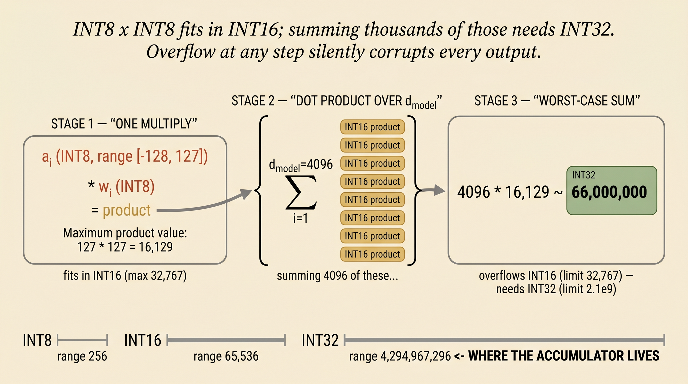
vii · 两种方案并排对比
| 方案 1 · 仅权重 | 方案 2 · W8A8 / FP8 | |
|---|---|---|
| 权重存储为 | INT4 / INT8 | INT8 / FP8 |
| 激活 | 全程保持 FP16 | 动态量化为 INT8 / FP8 |
| 矩阵乘法精度 | FP16 | INT8 / FP8（累加 FP32/INT32） |
| 反量化发生时机 | 矩阵乘法前 | 矩阵乘法后 |
| 加速来源 | 仅内存带宽 | 带宽 + 更快的运算 |
| 最适合 | 单用户解码 | 预填充 + 高批量服务 |
| 典型比特预算 | 4 位（GPTQ、AWQ、NF4） | 8 位（SmoothQuant、DeepSeek FP8） |
权重与激活——以及 Dettmers 的结果。
权重和激活表面上看起来相似——它们都是矩阵。但从量化角度看，它们是完全不同的对象。权重是静态的：已训练、已冻结、对每个请求都相同。激活是动态的：它们取决于用户输入的内容，而且它们有一个我们必须绕开的病态特性。
权重 · 静态
- 在部署前离线已知
- 量化一次，保存，永久加载
- 以量化形式存储在磁盘和 HBM 中
- 你可以花数小时优化缩放因子（GPTQ、AWQ）
激活 · 动态
- 对每个输入、每个 token、每个层都不同
- 离群值会沿特定通道不可预测地出现
- 要么即时计算缩放因子（动态），要么冻结一个校准好的缩放因子（静态）
i · Dettmers 的结果——离群值是通道结构化的
2022 年，Tim Dettmers 及其合作者发表了 LLM.int8()，他们在其中注意到 transformer 激活中离群值行为的某种特殊性。离群值不是随机的。它们集中在少数特定特征通道上——通常不到模型隐藏维度的 6%——而且同样的通道在每个 token 上都携带离群值。
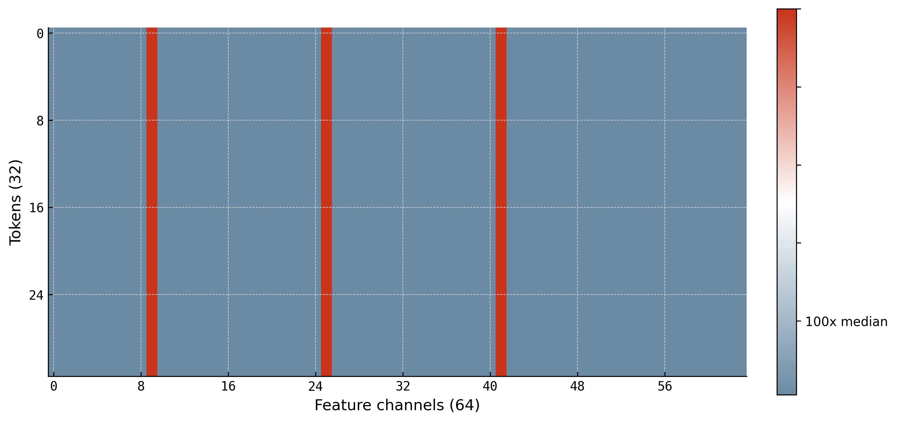
这为什么重要？因为如果你用每个张量一个缩放因子来量化激活矩阵，那些离群通道就会设定缩放因子，而其它所有通道都会被压进整数范围的一小部分。一个离群值毁掉 16,000 个正常值的精度。
修复方法是缩放因子的粒度。与其每个张量一个缩放因子，不如给每组 128 个通道各自的缩放因子。这样携带离群值的通道就住在自己的组里，那个组的缩放因子大到足以容纳它们，而其它组可以使用小得多的缩放因子——从而保留它们的精度。这正是 DeepSeek、SmoothQuant 和 LLM.int8() 都对激活收敛到逐通道瓦片粒度的原因。
ii · 对激活：动态 vs 静态量化
鉴于激活分布在每个输入上都会变化，我们有两个实际选择。我们可以在每一层、每次前向传播中重新计算缩放因子——那是动态（dynamic）。或者我们可以在校准数据集上预先计算一个缩放因子并永远冻结它——那是静态（static）。
动态
对每个输入，在每一层观察激活张量的最小 / 最大 / 绝对最大值，重新推导缩放因子和零点，然后量化。
a = [2.10, −0.85, 4.33, ...]
scale = 0.0295
输入 "Goodbye"：
a' = [0.50, 6.20, −1.10, ...]
缩放因子 = 0.0286 （不同！）
- 优点 · 缩放因子始终最优
- 缺点 · 每层有少量归约开销
静态（已校准）
部署前，运行约 512 个代表性样本，记录每一层的激活范围，为每层选择一个全局缩放因子，然后冻结它。
β = −4.50, α = 8.20
缩放因子 = 0.0498 （已冻结）
推理时，缩放因子是一个常数。
⚠ 如果真实输入有 9.50 → 被截断。
- 优点 · 每个 token 零开销
- 缺点 · 未见过的范围会被截断
| 动态 | 静态 | |
|---|---|---|
| 缩放因子何时选定？ | 每一层、每个输入 | 一次，在校准数据上 |
| 精度 | 更高（始终最优） | 更低（有截断风险） |
| 延迟开销 | 每层少量额外归约 | 无——纯查找 |
| 最适合 | 服务端 LLM 服务 | 边缘 / 移动端 / 延迟关键场景 |
DeepSeek V3 — FP8 量产，685B 参数。
DeepSeek V3 是我们拥有的方案 2 最干净的大规模示例。他们把权重和激活都量化为 FP8（具体是 E4M3），在 Hopper 张量核心上运行矩阵乘法，以 FP32 累加，并在层间转回 BF16。三个设计决策让整个方案成立：用 FP8 而非 INT8、激活用逐块（tile-wise）、权重用分块（block-wise）。
i · 为何用 FP8 而非 INT8？
Dettmers 的图景（图 20）说明了为何激活值不是均匀分布的——它们密集地聚集在零附近，并带有重尾。FP8 的对数间隔网格在零附近放置了更多可表示值（图 7），正是分布主体所在之处。INT8 把可表示值浪费在稀疏分布的尾部。
在逐块缩放的加持下，FP8 通常能以一半的字节数达到 BF16 的质量。而 INT8 单独在这个粒度下通常做不到。
ii · 粒度的不对称性
激活有通道结构化的离群值，权重没有。因此我们对两者应用不同的缩放粒度：
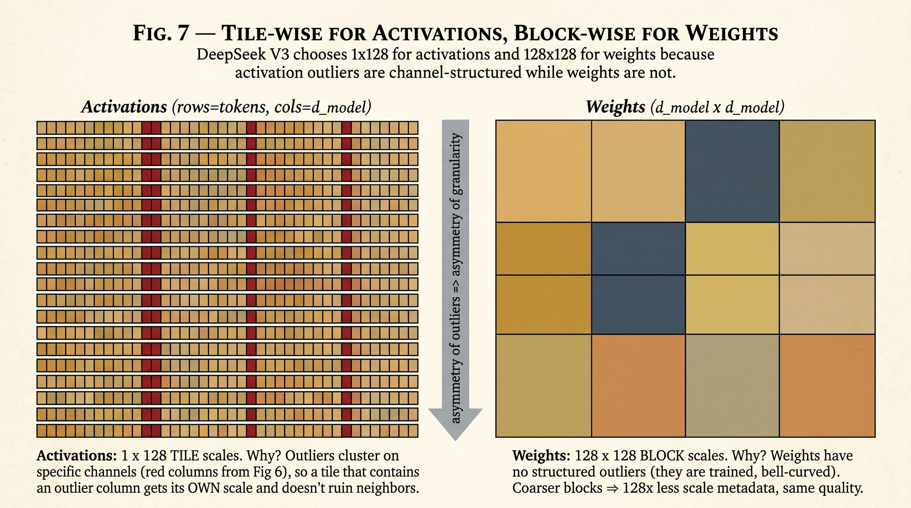
几何直觉：激活的逐块缩放因子隔离了离群通道。同一 token 行中但不同通道组的两个瓦片可以有截然不同的缩放因子。权重的分块缩放因子不需要那样——权重到处呈钟形分布，所以一个跨越 128×128 块的单一缩放因子就足够了。
iii · 完整流水线
iv · 那些登上头条的数字
GGUF — 为笔记本电脑而生的量化。
DeepSeek 的 FP8 方案假设你有 H100。大多数人没有。大多数人只有一块消费级 GPU，VRAM 可能只有 24 GB，而他们想在上面运行一个 700 亿参数的模型。GGUF 就是答案。它同时是两样东西：一种把存储预算榨到最后一比特的量化方案，以及一种让单个模型文件能在任意 GPU 和 CPU 组合上运行的文件格式。
i · 起点——Q4_0，每 32 个权重一个缩放因子
把权重矩阵量化到 INT4 最朴素的方式是：把权重分成 32 个一组的块，找到每块中的绝对最大值，推导出逐块缩放因子，把每个权重量化为 4 位码，并把缩放因子以 FP16 形式存储在块旁边。命名约定：Q4_0。
32 × 4 位（码） + 1 × 16 位（FP16 缩放因子） = 128 + 16 = 每块 144 位
每权重开销： 144 / 32 = 4.5 位/权重
INT4 的 4.5 位/权重——那半个比特的开销就是逐块缩放因子。你不能缩小块大小（更小的块 = 更多缩放因子 = 更多开销）。你不能把缩放因子缩到 FP16 以下而不损失范围。朴素方案在这里触底。
ii · K-quant 技巧——量化缩放因子本身
GGUF k-quant 引入的突破是注意到：我们有很多缩放因子，而它们是浮点数，所以为什么不也量化它们呢？把 8 个子块捆绑成一个 256 个权重的“超级块”。每个子块仍有自己的缩放因子，但现在那 8 个子缩放因子被量化为 INT8，而一个 FP16 超级缩放因子（跨所有 8 个共享）把它们的范围还回来。
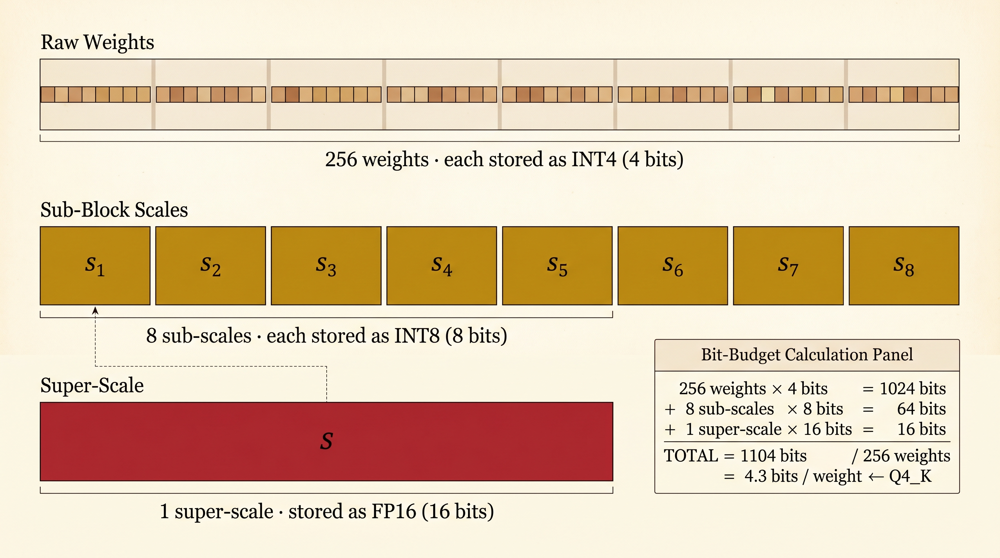
比特预算的算术正是重点。让我们重算一遍：
256 × 4 位（码） + 8 × 8 位（子缩放因子） + 1 × 16 位（超级缩放因子）
= 1024 + 64 + 16 = 每超级块 1104 位
每权重开销： 1104 / 256 = 4.3 位/权重 ← Q4_K
相比 Q4_0 节省了 0.2 位/权重。在一个 70B 参数模型上，0.2 位 × 70 × 10⁹ ÷ 8 = 1.75 GB。这可不是小数目——而且精度实际上比 Q4_0 更好，因为两级缩放减少了混合幅度权重块中的量化误差。
iii · 数值演练——256 个权重，端到端
图不错。现在让我们用实际数字来做一遍。我们将取 256 个真实感的权重值，让它们跑完整个 Q4_K 流水线（子块量化、子缩放因子量化、超级缩放因子存储），并在最后核算每一个比特。
第 1 步 — 一个 32 权重的子块
这是子块 #1——取自一个典型 transformer 线性层的 32 个 FP32 权重：
0.18, 0.62, −0.09, 0.33, 0.27, −0.05, 0.41, 0.15,
−0.38, 0.21, 0.09, −0.48, 0.04, 0.55, −0.13, 0.31,
−0.07, 0.42, 0.18, −0.26, 0.14, 0.37, −0.11, 0.29 ]
这个块中的绝对最大值是 α₁ = 0.71（上文中以红色高亮）。对于对称 INT4 量化，整数范围是 [−7, +7]，因此：
量化该块的前八个权重（完整的 32 个遵循相同模式）：
| w (FP32) | w / scale₁ | q (INT4) | ŵ = q · scale₁ | 误差 |
|---|---|---|---|---|
| 0.12 | 1.18 | 1 | 0.101 | 0.019 |
| −0.34 | −3.35 | −3 | −0.304 | 0.036 |
| 0.08 | 0.79 | 1 | 0.101 | 0.021 |
| 0.51 | 5.03 | 5 | 0.507 | 0.003 |
| −0.22 | −2.17 | −2 | −0.203 | 0.017 |
| 0.03 | 0.30 | 0 | 0.000 | 0.030 |
| 0.45 | 4.44 | 4 | 0.406 | 0.044 |
| −0.71 | −7.00 | −7 | −0.710 | 0.000 ← 锚定缩放因子 |
因此子块 #1 产生 32 个 INT4 码（各 4 位）外加一个 FP32 缩放因子（0.10143）——暂如此。把这个缩放因子带下去。
第 2 步 — 对所有 8 个子块重复
对其它七个子块执行相同过程，得到另外七个缩放因子。具体来说，假设八个子块的绝对最大值如下：
| 子块 | αᵢ = max |w| | sᵢ = αᵢ / 7 (FP32) |
|---|---|---|
| 1 | 0.71 | 0.10143 |
| 2 | 0.50 | 0.07143 |
| 3 | 0.60 | 0.08571 |
| 4 | 0.30 | 0.04286 |
| 5 | 0.88 | 0.12571 ← 最大 |
| 6 | 0.45 | 0.06429 |
| 7 | 0.63 | 0.09000 |
| 8 | 0.55 | 0.07857 |
我们现在有八个 FP32 缩放因子。如果我们只是把它们存储为 FP16，就会回到 Q4_0 的开销（4.5 位/权重）。K-quant 技巧就是压缩这些缩放因子本身。
第 3 步 — 量化缩放因子：超级缩放因子 + INT8 子缩放因子
找到八个子缩放因子的最大值——这成为我们的超级缩放因子：
现在每个子缩放因子都用 INT8 对照 S 进行量化（范围 0..127，因为缩放因子为正）：
| i | sᵢ (FP32) | sᵢ / S × 127 | qᵢ (INT8) | ŝᵢ = qᵢ · S / 127 | 误差 |
|---|---|---|---|---|---|
| 1 | 0.10143 | 102.47 | 102 | 0.10097 | 0.00046 |
| 2 | 0.07143 | 72.16 | 72 | 0.07126 | 0.00017 |
| 3 | 0.08571 | 86.60 | 87 | 0.08610 | 0.00039 |
| 4 | 0.04286 | 43.30 | 43 | 0.04256 | 0.00030 |
| 5 | 0.12571 | 127.00 | 127 | 0.12571 | 0.00000 ← 锚定 S |
| 6 | 0.06429 | 64.95 | 65 | 0.06435 | 0.00006 |
| 7 | 0.09000 | 90.90 | 91 | 0.09008 | 0.00008 |
| 8 | 0.07857 | 79.36 | 79 | 0.07820 | 0.00037 |
子缩放因子的误差极小——三到四位小数——因为 INT8 对一个紧贴的超级缩放因子有充足的精度。推理时，反量化是两次乘法：
恢复 wᵢⱼ： ŵᵢⱼ = (INT4 code)ᵢⱼ × ŝᵢ
第 4 步 — 比特预算，完全核算
现在我们可以数出这个 256 权重超级块在磁盘上存储的每一个比特：
| 存储了什么 | 数量 | 每个是 | 总比特数 |
|---|---|---|---|
| INT4 权重码 | 256 | 4 bits | 1024 |
| INT8 子缩放因子码（q₁..q₈） | 8 | 8 bits | 64 |
| FP16 超级缩放因子（S） | 1 | 16 bits | 16 |
| 总计 | 1104 位 |
这就是整个方案在真实数字上的样子。相对 Q4_0（4.5 位/权重，每 32 个权重块一个 FP16 缩放因子）的胜利，是那通过跨更大超级块摊销缩放因子并压缩子缩放因子本身而节省的 0.2 位。在一个 70B 参数模型上，那 0.2 位/权重 × 70 × 10⁹ ÷ 8 = 少存储和加载 1.75 GB。
iv · 解读 Q4_K_M 名称
所以 Q4_K_M 意味着：约每权重 4 位、K-quant 方案、中等变体。Q5_K_M 是 5 位下的同样技巧。Q2_K 一路压到约 2.5 位/权重，之后质量开始崩溃。
v · 各格式的比特预算
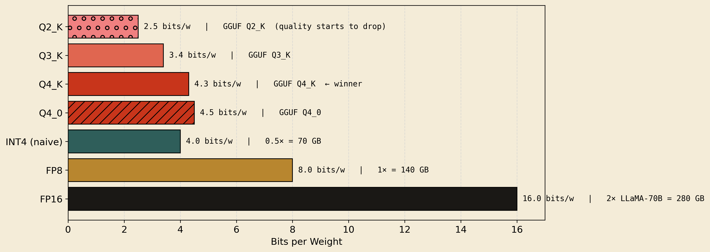
vi · 杀手锏特性——GPU + CPU 卸载
在这里，GGUF 不再只是一种量化方案，而是变成了完全不同的东西。一个 transformer 是一堆独立的层。在 GGUF 文件格式中，每层的权重都存储为一个自包含的块，运行时可以把它加载到任意 GPU 显存或 CPU 内存。运行时逐层决定每个块去哪里。
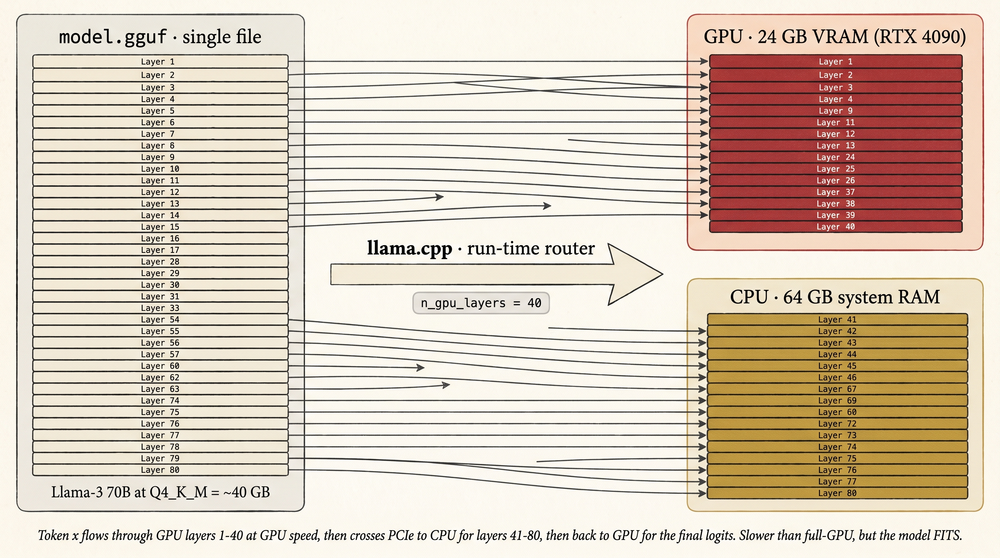
n_gpu_layers = 40 时，llama.cpp 把前 40 层加载到 GPU，其余 40 层加载到 CPU。token 的隐藏状态在两者之间跨越 PCIe。比全 GPU 慢，但模型装得下。vii · 那么 llama.cpp 处于什么位置？
这是最常见困惑的来源。llama.cpp 是运行时——Georgi Gerganov 编写的 C++ 推理引擎。GGUF 是它读取的文件格式。K-quants 是它实现的量化算法。这三者一起开发，人们混用这些名字，但它们是三个不同的东西：
| 名称 | 它是什么 | 它做什么 |
|---|---|---|
| llama.cpp | 运行时（C++ 二进制） | 读取模型文件、执行 transformer、生成 token、管理 GPU/CPU 内存 |
| GGUF | 磁盘上的文件格式 | 一个自包含文件，保存权重（已量化）、元数据、分词器、层布局 |
| K-quants | 量化方案 | GGUF 文件内的 Q4_K、Q3_K、Q2_K 等两级编码 |
| Ollama / LM Studio | llama.cpp 之上的 UI 包装 | 更友好的界面、模型管理、服务器 API——底层引擎仍是 llama.cpp |
.gguf 文件（包含 K-quant 编码的权重），现在正通过把层路由到用户的 GPU 和 CPU 来生成 token。四层抽象，一个生态系统。量化感知训练——教网络变得鲁棒。
我们迄今看到的每一种量化方案都是训练后（post-training）的：用 FP32 或 BF16 训练模型，然后事后量化并希望它能挺住。对于激进的比特预算（INT4 及以下），这种希望变得薄弱。量化感知训练（QAT）采取不同的方法：把量化噪声烘焙进前向传播来训练模型，使网络学会对它鲁棒。
i · W 和 x 从何而来——锚定在 LLM 层中
在进入“伪量化”之前，先快速回顾一下这些角色从何而来。QAT 的整个故事发生在一个 transformer 线性层内——正是我们在 § VI 画的同样设置，只不过现在我们是在训练，而不只是跑推理。
ii · 为何训练后量化在低比特预算下失效
标准训练找到在连续 FP32 空间中最小化损失的权重。那个最优点可能位于一个狭窄的极小值中——一个尖锐的山谷，在那里哪怕移动权重一点点都会让损失跃升。量化把每个权重移动最多 scale / 2，而在狭窄极小值中，这些微小移动会把模型甩出谷底，甩到陡峭的谷壁上。精度崩塌。
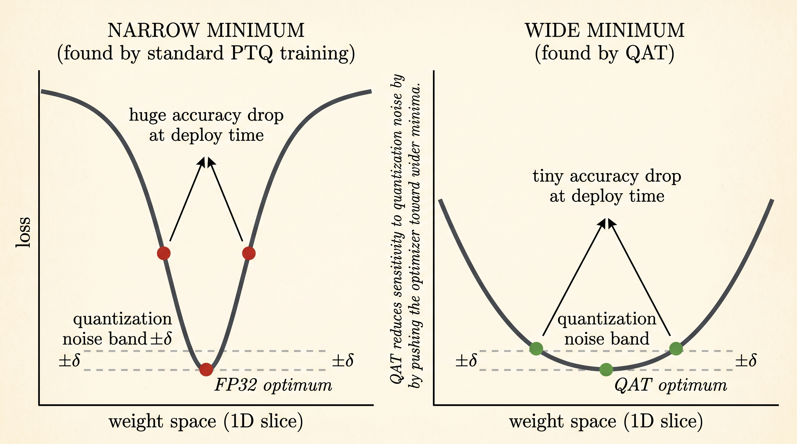
iii · 前向传播中的伪量化
这个技巧在机制上很简单。在前向传播中量化将在推理时发生的位置插入一个“伪量化”操作——通常在每层矩阵乘法之前。伪量化一步完成量化 → 反量化。权重被取整到量化网格，然后立即转回 FP32。数据类型保持 FP32 以便梯度流动，但值被约束为落在网格点上。
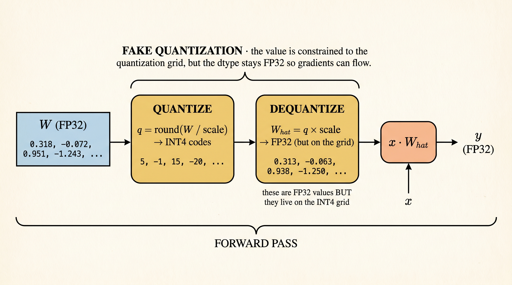
x · Ŵ 正常进行。网络每一步都看到它在部署时会面对的确切量化噪声。为什么这叫伪量化？因为矩阵乘法仍是 FP32——训练期间我们从不真正做 INT4 算术。我们只是把 FP32 值约束到一个离散网格上。“真正的”量化（INT4 存储 + INT4 运算）只发生在部署时。
iv · 反向传播——以及直通技巧
我们刚描述的前向传播有一个严重问题：round() 是一段楼梯。在台阶之间它是平的，在每个台阶处它不连续地跳跃。反向传播需要导数——而楼梯的导数对训练来说是错误的东西。
round() 会杀死梯度。左：函数本身是一段楼梯——每个踏面完全平坦，所以整数边界之间的斜率为零。右：因此导数在跳跃处之外处处为零，在跳跃处则是无限的 Dirac 尖峰。在真实训练步中，W 恰好落在跳跃处的概率为零——因此梯度实际上就是零。SGD 没有任何可循的东西。修复方法是直通估计器（straight-through estimator，STE）。在反向传播期间，我们假装量化操作不存在。梯度穿过它，仿佛它是恒等函数——处处导数 = 1。数学上：
反向： ∂L/∂W ← ∂L/∂Ŵ （把 quant 当作恒等）
有偏的梯度听起来异端，但它在实践中效果极好。因为量化步长很小（通常 scale / 2），而且因为取整在许多权重上平均是无偏的，梯度方向足够接近正确。优化器继续在连续空间中移动权重，只有当权重跨越网格边界时，量化输出才真正改变。
v · 为何这能找到更宽的极小值
这是点睛之笔。因为网络训练所针对的损失函数包含了量化噪声，优化器会被隐式地推向那些噪声不会造成伤害的权重——即位于宽阔极小值底部的权重。量化噪声把一个狭窄山谷倾斜成高损失；QAT 能感受到那种倾斜，并走到一个倾斜无关紧要的更宽山谷。
结果：一个模型在最终以 INT4 部署时，精度损失很小（有时完全没有），相比之下纯训练后 INT4 会招致大幅损失。关于优化理论的细节——梯度如何流经 STE、为何收敛得以保持、与噪声注入正则化的联系——请参阅下文引用的综述。
压缩 KV 缓存——TurboQuant，一次一幅图。
我们一直在压缩权重。KV 缓存是 LLM 服务中另一大块内存——在 32K 上下文下，它可以在权重之外再占 10–20 GB——人们想同样激进地压缩它。但缓存有一个权重没有的难题：它在注意力内部被消费以计算点积（dot product）。因此我们必须以那些点积仍然正确的方式压缩。本节用三幅图讲述整个想法。
i · 点积从何而来？
回想一下注意力做什么。对于每个新 token，模型计算一个查询向量 Q。KV 缓存为每个过往 token 存储一个键向量 K。过往 token t 的注意力分数就是：
把所有分数叠起来，做 softmax，那就是注意力权重。因此每个注意力分数都是一个新查询与一个缓存键之间的点积。如果我们量化缓存的键，那些点积就是我们必须保持准确的东西。
ii · 偏置问题——为何朴素量化会缩小点积
从两个缓存的键向量 x 和 y 开始（只是为了数学方便这样标记；在注意力中，其中一个其实是 Q）。用一个粗糙的 MSE 量化器（约 3 位）量化每个。每个都被分成量化部分 q（我们存储的）和残差 r（被取整舍去的）：
现在真实的点积展开成四个部分：
↑ 我们有的 ↑ 缺失的——且偏低
这里是同样的事情在真实数字上。设 x 和 y 是真实点积为 2.50 的 4 维向量：
2.50 的 4 维向量。量化每个向量会把它分成“保留”的部分 q（蓝色）和“被舍去”的残差 r（金色）。真实点积是四个交叉项的和；如果我们只存储 q 部分，我们得到 2.250——10% 的偏置。缺失的 0.250 存在于三个金色交叉项中。TurboQuant 的工作是用每个坐标仅一个额外比特恢复大部分缺失的部分。iii · 额外的那 1 比特从何而来？
好问题。我们不会存储残差本身——那会让压缩失效。我们将存储关于它的一个单一的是/否事实。那个是/否事实就是那 1 比特。
这个事实是：残差在一条随机线的哪一侧？
g·r。它的符号告诉我们 r 在哪一侧。那个符号——仅仅是 +1 或 −1——就是我们存储的 1 比特。我们完全丢弃幅度；只保留侧。所以那 1 比特字面上就是一个是/否问题的答案：“残差是否与随机方向 g 在同一侧？”一个比特，一个是/否。这就是全部存储成本。
iv · 每个残差存 1 比特如何帮助
你可能会（合理地）问：“每个坐标 1 比特听起来几乎不含信息——它如何帮助恢复点积？”
答案是：这个问题被问很多次，用许多不同的随机方向——而且每个残差向量的每个维度问一次。因此如果缓存的键有 d = 128 个坐标，我们选 128 个随机方向，问侧边问题 128 次，最终存储 128 个符号比特。那就是我们一直在数的“每坐标 1 比特”：每个键向量维度一个比特、一个随机方向。
每个随机方向都是一个是/否问题。这 128 个答案合起来，很好地估计了两个残差彼此相对的方向——而那个方向正是我们重构 ⟨rₓ, rᵧ⟩ 所需的。
+1，表示“同侧”）是关于两个残差如何定向的单次噪声投票。中：用许多随机方向重复；每个都是一次更多的是/否投票。右：平均所有投票。投票平均 ≈ rₓ 和 rᵧ 之间的方向，乘以存储的范数 ‖rₓ‖、‖rᵧ‖ 就恢复出残差点积 ⟨rₓ, rᵧ⟩。每个问题一个比特；许多问题；一个好答案。这就是整个 1 比特故事。那个比特是“一条随机线的哪一侧”。当你用许多不同的随机线问同一个问题并取平均时，这些比特变得有用。指向相似方向的两个缓存残差，大多数时候会落在同一侧——而那个“同侧率”正是让你找回缺失点积部分的东西。
iv · 点积如何在注意力时被重构
因此当模型想要某个缓存 token 的 Q · Kₜ 时，实际运行的是：
2.250——偏低。第 2 部分（对符号比特乘积取平均并乘以存储范数）恢复约 0.250——残差部分。合计：2.500。网络看到的注意力分数与全 FP16 时一样，尽管我们每个坐标只花 4 比特。v · 这在 LLM 中落在何处
具体来说，对于一个在 32K 上下文运行的 Llama-3-70B 级模型：
用大白话说这条链：更小的 KV 缓存 → 更多请求同时装进 VRAM → 更高的服务吞吐量。它不损害质量的原因是，驱动注意力的点积结果是正确的——第 1 部分捕获主体，第 2 部分恢复纠偏部分，网络看到与 FP16 时相同的 softmax 输入。